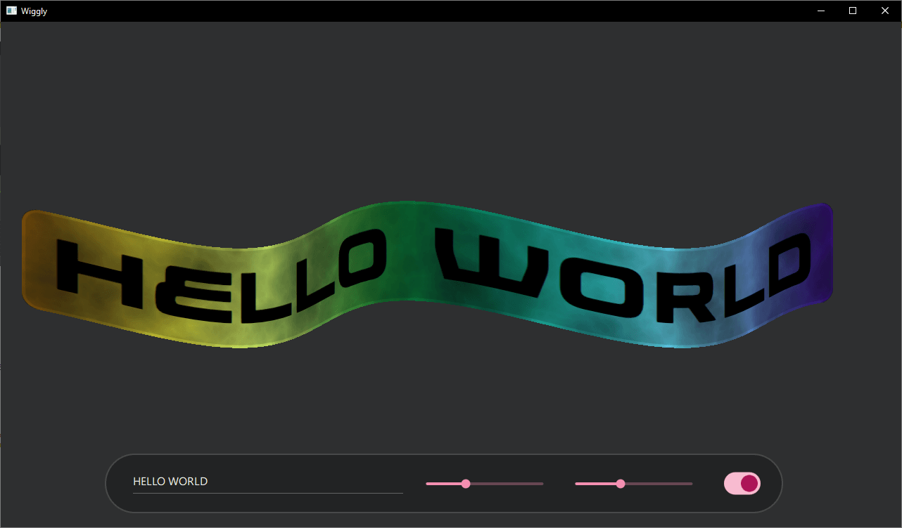
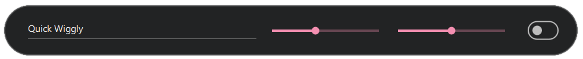
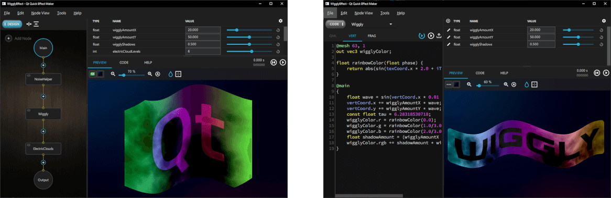
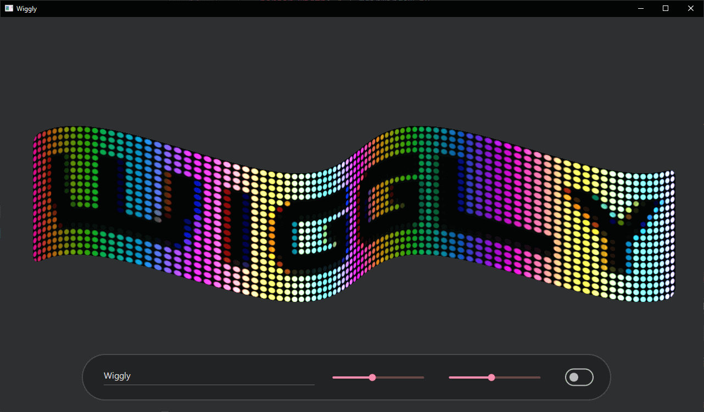

Wiggly
Demonstrates how to use an effect created with the Qt Quick Effect Maker (QQEM).
Wiggly demonstrates how to use a shader effect, created with the Qt Quick Effect Maker (QQEM), in your Qt Quick application. A simple Qt Quick user interface allows changing the wiggly text and the wave size, as well as applying the electric cloud effect.

Running the Example
To run the example from Qt Creator, open the Welcome mode and select the example from Examples. For more information, visit Building and Running an Example.
Application basics
Most of the example is contained and set up in the main.qml file. First, create an item which is used as the source for the effect.
Rectangle { id: sourceItem anchors.centerIn: parent width: textItem.width + 60 * mainWindow.px height: textItem.height + 30 * mainWindow.px color: "#d0d0d0d0" border.color: "#d0ffffff" border.width: 4 * mainWindow.px radius: 20 * mainWindow.px layer.enabled: true layer.smooth: true visible: false Text { id: textItem anchors.centerIn: parent text: wigglyTextField.text font.family: font1.font.family font.pixelSize: Math.min(200 * mainWindow.px, 0.8 * mainWindow.width / text.length) } }
The item is a Rectangle with a Text element inside. The size of the rectangle depends on the number of characters in the text to make it fit nicely into the application window. The important lines here are layer.enabled: true that creates the offscreen texture for the effect and visible: false that hides this element as the effect will replace its content. If the item is visible, it looks like this without the wiggly effect:
Next, create the settings toolbar used for controlling the effect.

TextField { id: wigglyTextField anchors.verticalCenter: parent.verticalCenter width: mainWindow.width * 0.3 text: "Wiggly" } Slider { id: wigglyAmountYSlider anchors.verticalCenter: parent.verticalCenter width: mainWindow.width * 0.15 from: 0 to: 100 value: 40 } Slider { id: wigglyAmountXSlider anchors.verticalCenter: parent.verticalCenter width: mainWindow.width * 0.15 from: 0 to: 100 value: 20 } Switch { id: electricSwitch anchors.verticalCenter: parent.verticalCenter }
These components use the Qt Quick Controls, stacked inside a Row element. The first one is a TextField, which you can use to change the wiggly text. Then there are separate Slider elements, to control the wave size in X and Y coordinates. The last control is a Switch, to enable the electric clouds effect.
WigglyEffect { id: wigglyEffect source: sourceItem anchors.fill: sourceItem timeRunning: true wigglyAmountX: wigglyAmountXSlider.value wigglyAmountY: wigglyAmountYSlider.value electricCloudColor.a: electricSwitch.checked ? 1.0 : 0.0 wigglyShadows: 0.5 }
This WigglyEffect is applied to the sourceItem defined earlier. Code sets timeRunning to true to animate the effect. Finally, it connects some shader effect properties to the controlling components.
You can also look at the WigglyEffect.qml file for details of the effect. But that file is created by the QQEM tool, so you should not usually modify it manually. Instead, use the Qt Quick Effect Maker as instructed in the next section.
Modifying the effect in QQEM
As mentioned above, the WigglyEffect has been created using the Qt Quick Effect Maker. For more information about QQEM installation, see the Installing Qt Quick Effect Maker documentation.
To modify the effects:
- Open the effect project file (qep) in the QQEM tool.
- Modify the effect nodes, properties or the shader code and see the live preview.
- When ready, export the modified effect into your application.
When the WigglyEffect/WigglyEffect.qep project is opened in QQEM, you should see something like this:

On the left side, you can see the Node view with different nodes of this effect. The top-right view is Property view, with properties (API) of the effect. The bottom-right corner shows Live view of the effect, with the currently selected preview source item. To see the live preview with the actual content, add the image of the sourceItem to the sources list in Edit > Preferences and select it from the preview toolbar popup list.
To modify the shader code for the wiggly effect, double-click the Wiggly node or select it and switch from DESIGN mode to CODE mode. Then select the VERT tab to see the vertex shader, where most of the effect code is:
@mesh 63, 1
out vec3 wigglyColor;
float rainbowColor(float phase) {
return abs(sin(texCoord.x * 2.0 + iTime + phase));
}
@main
{
float wave = sin(vertCoord.x * 0.01 + iTime * 3.0);
vertCoord.x += wigglyAmountX * wave;
vertCoord.y += wigglyAmountY * wave;
const float tau = 6.28318530718;
wigglyColor.r = rainbowColor(0.0);
wigglyColor.g = rainbowColor(1.0/3.0 * tau);
wigglyColor.b = rainbowColor(2.0/3.0 * tau);
float shadowAmount = (wigglyAmountX + wigglyAmountY) * wave;
wigglyColor.rgb += shadowAmount * wigglyShadows * 0.01;
}
The first line sets up the ShaderEffect mesh grid size. This is needed, as by default there are vertices only in the corners and the wiggly effect requires more moving vertices. Then, set the vertex shader to output wigglyColor variable, which will be later used in the fragment shader for applying some shadow. Next, introduce a function called rainbowColor, which returns the color of a single channel at the phase.
Inside the main method, code first sets the vertCoord to move the vertex positions in a sin wave. The next lines set the red, green, and blue channels of the wiggly rainbow. The last two lines then apply some shadowing following the wave.
Next, select the FRAG tab to see the fragment shader code:
@main
{
fragColor.rgb *= wigglyColor * fragColor.a;
}
The fragment shader is very simple and only multiplies the current source color with the wigglyColor received from the vertex shader.
More of the processing could have been done on the fragment shader side, but having the code on the vertex shader generally is more performant due to the number of vertices being notably lower than the number of fragments (pixels). Some tools, like the Shadertoy, only allow writing a fragment shader. But as Qt Quick and QQEM also support custom vertex shaders, you should try to take advantage of them.
When you modify these shaders, the output of the Live view changes instantly. To get the modified shader into use in the example application, select File > Export from the menu.
You can now play more with the QQEM features. For example, add new nodes, change or add new properties, utilize these properties in the shader code, and so on. Here is an example of what the effect looks like with LedScreen node added to the beginning of the node graph:

Files: